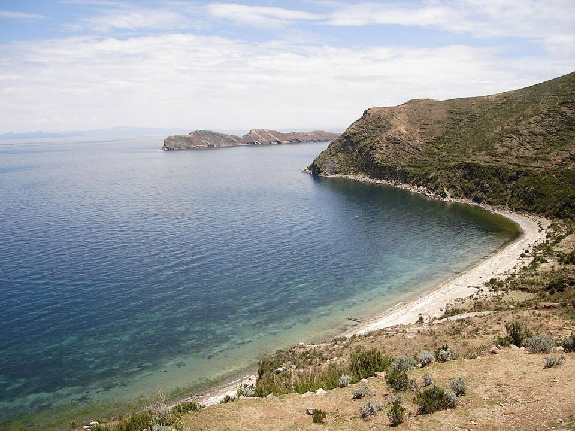
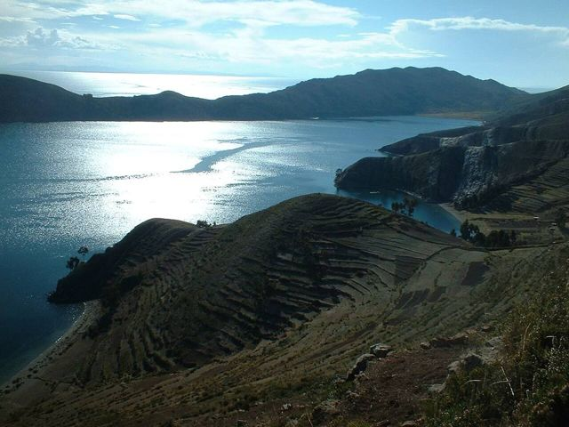
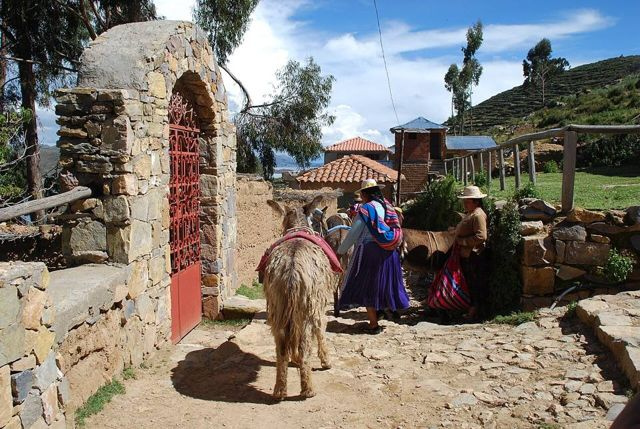
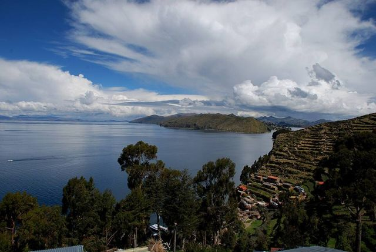
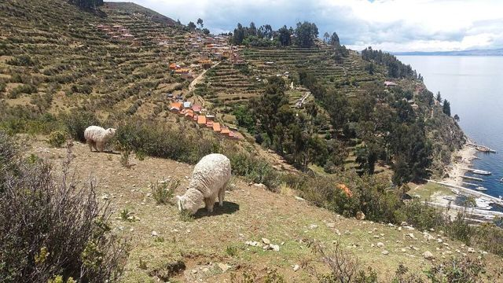
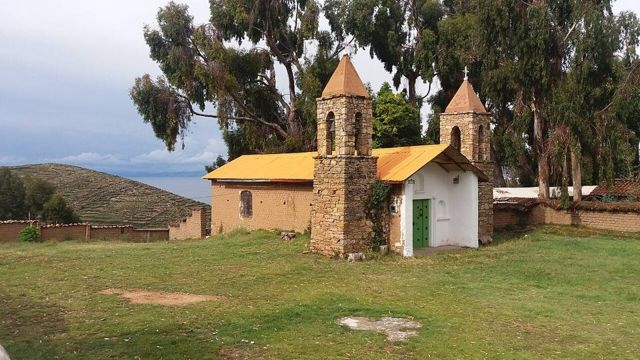
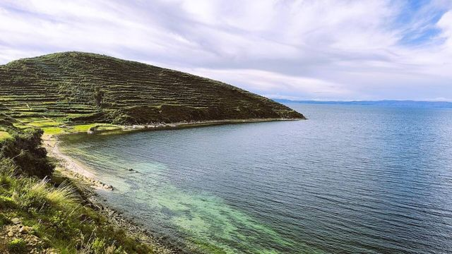

Isla del Sol
La Paz Department · Altiplano, lakes and salt flats

According to Inca legend, the Sun was born here. The Isla del Sol has no cars, just farming terraces, donkeys, ruins and deep blue water facing the snowy peaks of the Cordillera Real. Spending the night on the island to watch the sunset and sunrise is one of the best moments of a trip to Bolivia.
3,900 maltitude
1 to 2 daysto spend there
High altitude. Above 3,500 m, altitude sickness (soroche) is common. Arrive gradually, drink plenty and take it slow on the first day.
Things to do
- Stay in Yumani (south) for sunset and sunrise
- Inca stairway and sacred fountain
- Pilko Kaina ruins
- If open: the walk to the north (Chincana)
What to eat
- TroutTrout from Lake Titicaca or the Cordillera rivers, fried or grilled, with rice, fries and salad. Eaten on the beach in Copacabana and in the small restaurants of mountain villages.
- Quinoa soupA hot soup of quinoa and vegetables, served in refuges and high-altitude comedores. Perfect when it's cold.
Tip. No cars on the island. The south (Yumani) is always open; the north (Challapampa, Chincana) closes at times because of a dispute between communities. Ask at the Copacabana dock the day before.
Also here
- Myths and legends Manco Cápac and Mama OclloAccording to Inca legend, the Sun brought his children Manco Cápac and Mama Ocllo out of Lake Titicaca, near the Isla del Sol, to found Cusco and the Inca empire.
How to get to Isla del Sol
Isla de la Luna Boat · 30 to 45 min
Private boat or combined tour.
Copacabana Boat · 1 h 30 to 2 h
Boats from Copacabana beach, leaving in the morning and early afternoon.
Photos of Isla del Sol












More places in this region
 Copacabana (Lake Titicaca)A small town on the shore of Lake Titicaca, gateway to the Isla del Sol.
Copacabana (Lake Titicaca)A small town on the shore of Lake Titicaca, gateway to the Isla del Sol. Isla de la LunaA small neighbouring island with the temple of the Virgins of the Sun (Iñak Uyu).
Isla de la LunaA small neighbouring island with the temple of the Virgins of the Sun (Iñak Uyu). HuatajataA Lake Titicaca village, home of the totora reed boats.
HuatajataA Lake Titicaca village, home of the totora reed boats. Suriki IslandThe island of reed-boat builders, including those of the Ra II expedition.
Suriki IslandThe island of reed-boat builders, including those of the Ra II expedition. Isla ParitiA small Titicaca island and its museum of Tiwanaku pottery found on the spot.
Isla ParitiA small Titicaca island and its museum of Tiwanaku pottery found on the spot.